Odontologia especializada para crianças e toda a família
A LUCCARE é uma clínica odontológica em Pinheiros com foco em odontopediatria. Acompanhamos cada fase, desde os primeiros cuidados do bebê até a vida adulta, reunindo diferentes áreas da odontologia em um só lugar.
Cada consulta é planejada de acordo com a idade, as necessidades e o ritmo de cada paciente, em um ambiente acolhedor e preparado para toda a família.
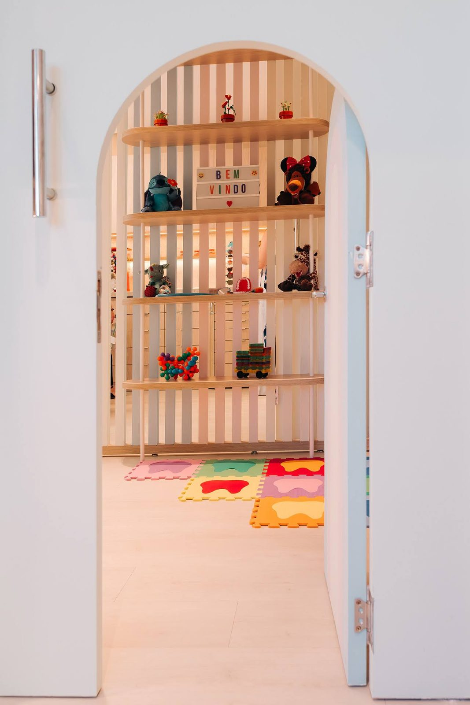
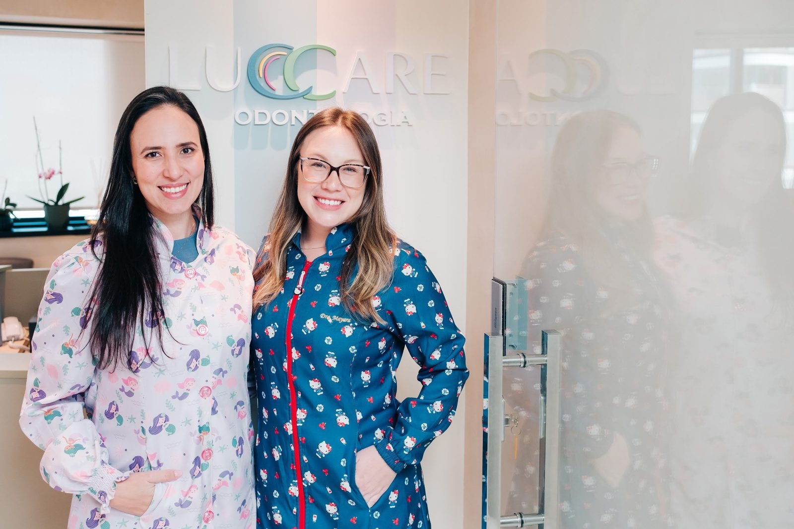
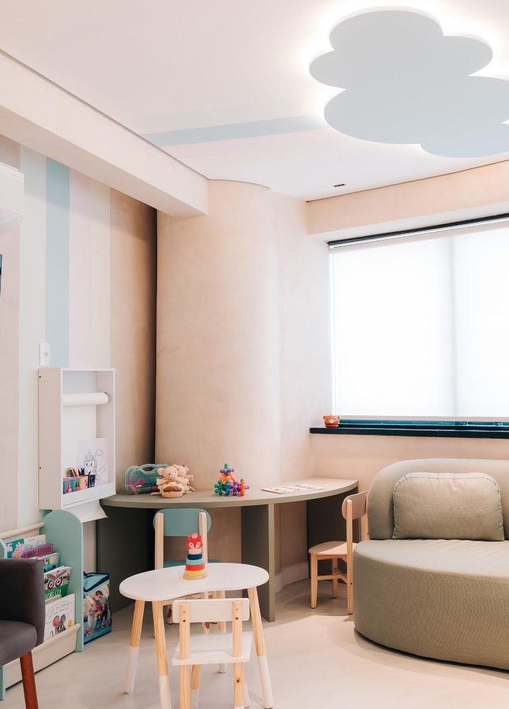
Uma clínica pensada para cuidar de crianças e suas famílias
A LUCCARE nasceu do encontro das odontopediatras Mayara Macheldey e Karina Haibara, ambas formadas pela Faculdade de Odontologia da USP.
Desde o início, a proposta foi criar uma clínica que unisse conhecimento técnico, escuta e respeito ao tempo de cada criança. Um lugar em que a experiência no dentista pudesse ser construída de forma tranquila desde os primeiros anos de vida.
O espaço foi planejado para favorecer a adaptação das crianças e oferecer conforto às famílias, sem abrir mão de uma estrutura clínica completa e de protocolos rigorosos de atendimento.
Com o crescimento da clínica, ampliamos também o cuidado oferecido. Hoje, além da odontopediatria, atendemos adolescentes e adultos em áreas como prevenção, periodontia, reabilitação oral e ortodontia, incluindo alinhadores Invisalign.
Rua Francisco Leitão, 469 · cj. 1206 · Pinheiros · São Paulo
Um ambiente preparado para receber crianças e adultos
Nossa clínica em Pinheiros foi planejada para tornar a experiência mais confortável desde a chegada.
O espaço conta com áreas de convivência e leitura, elementos pensados para as crianças e consultórios equipados para atender diferentes necessidades com segurança e tranquilidade.
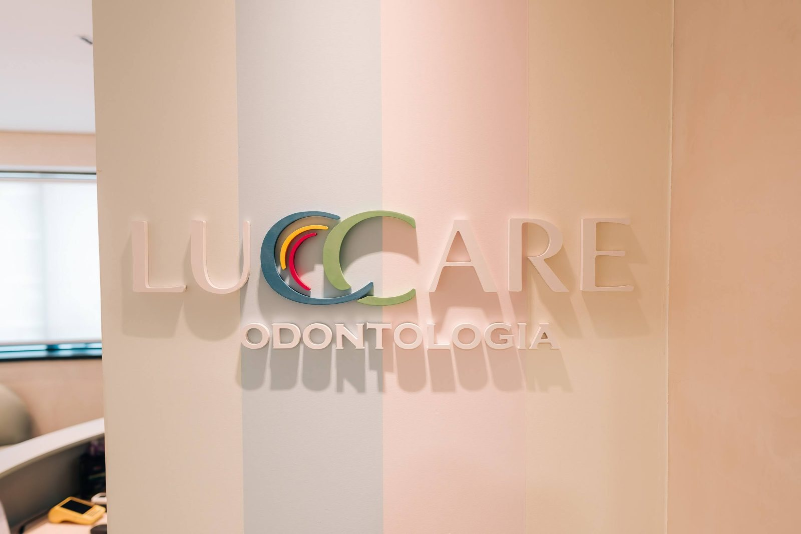
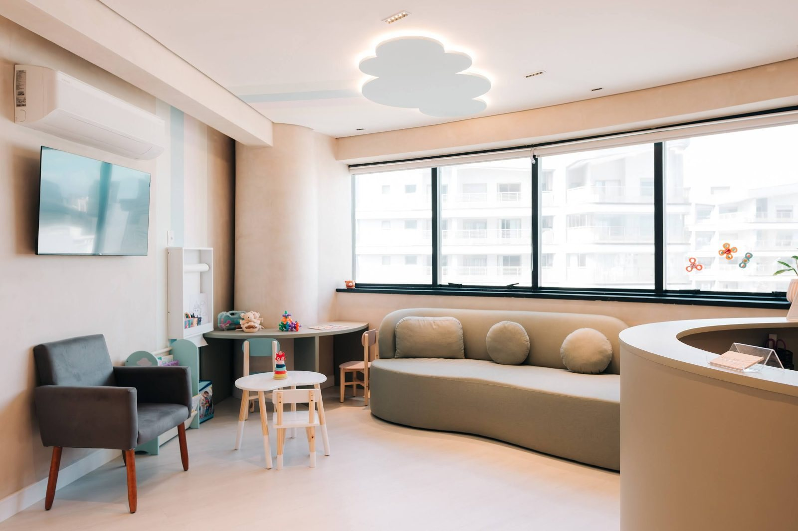
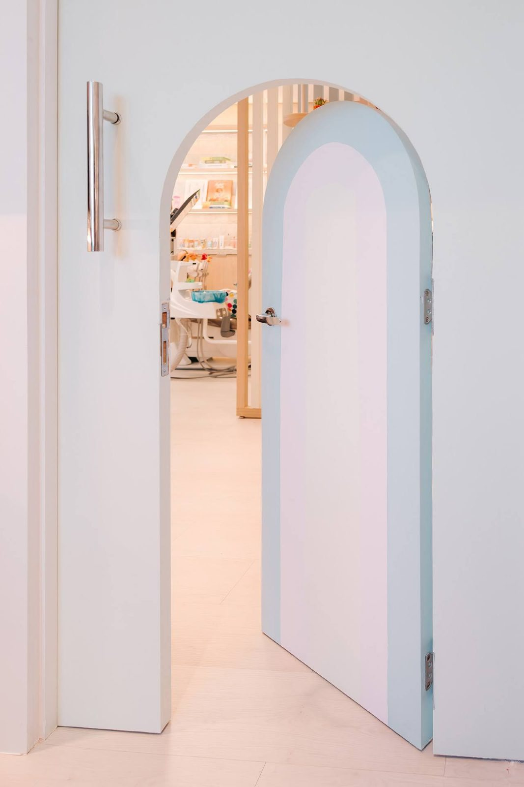
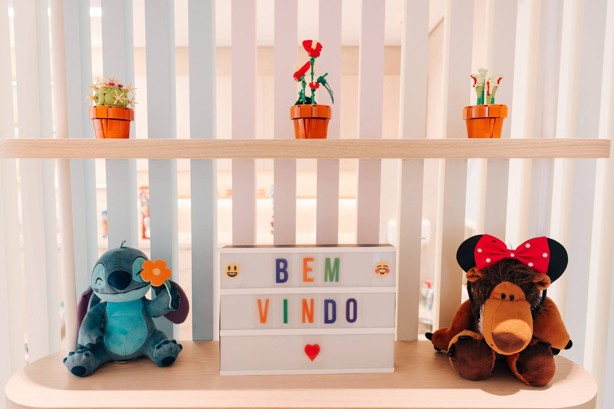
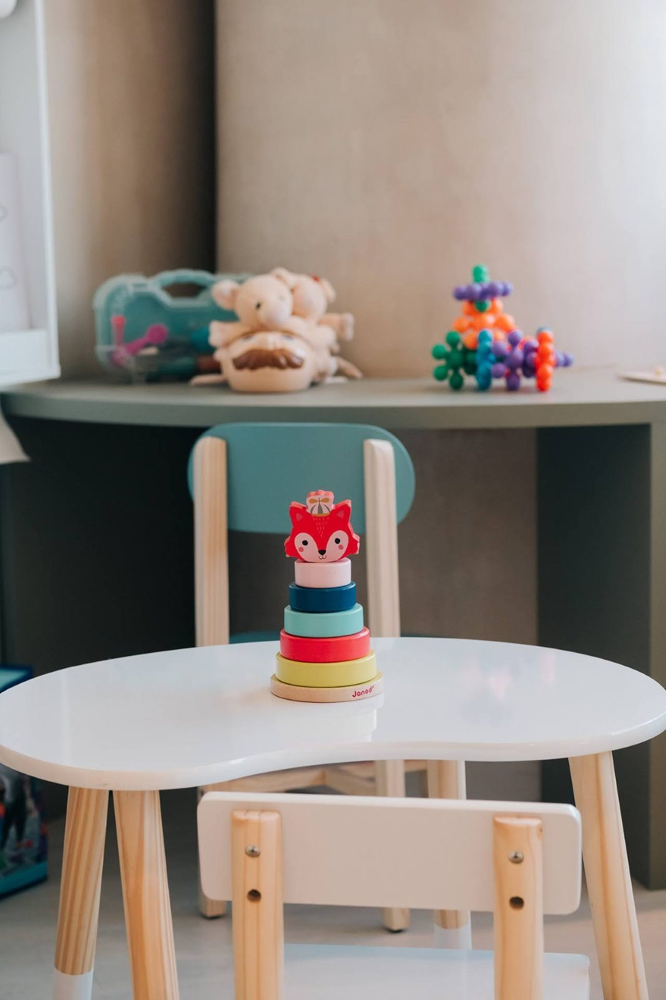
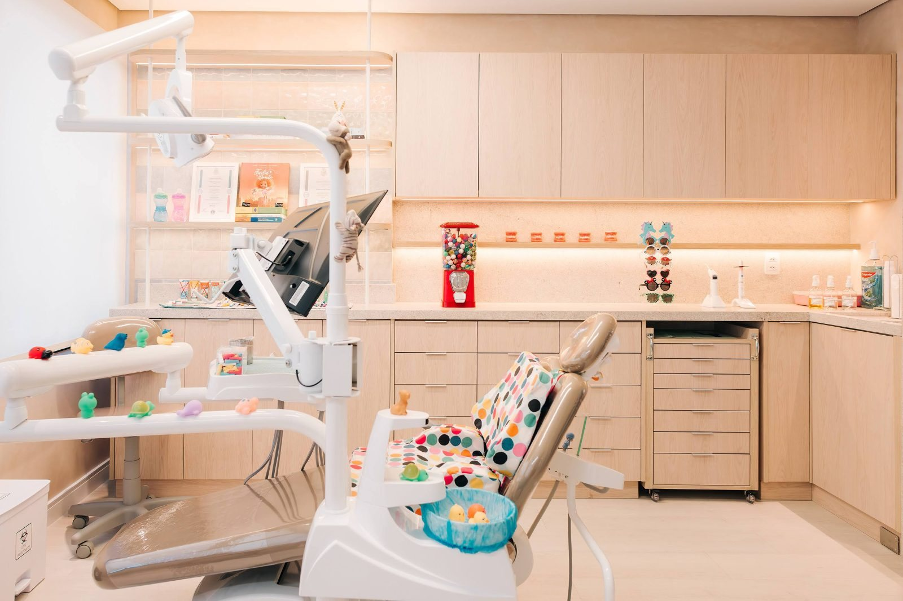
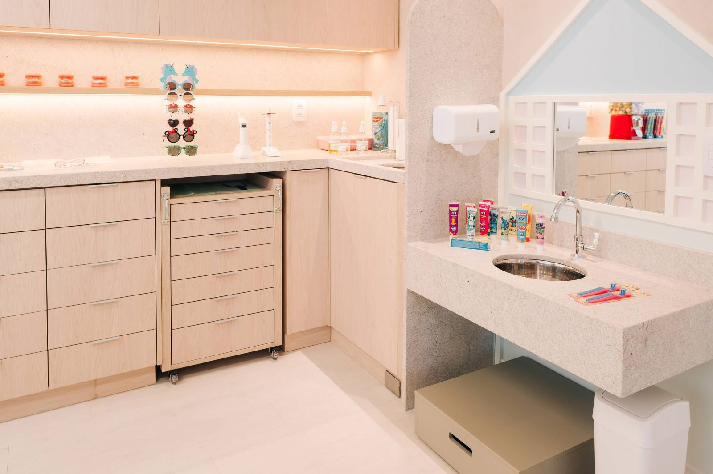
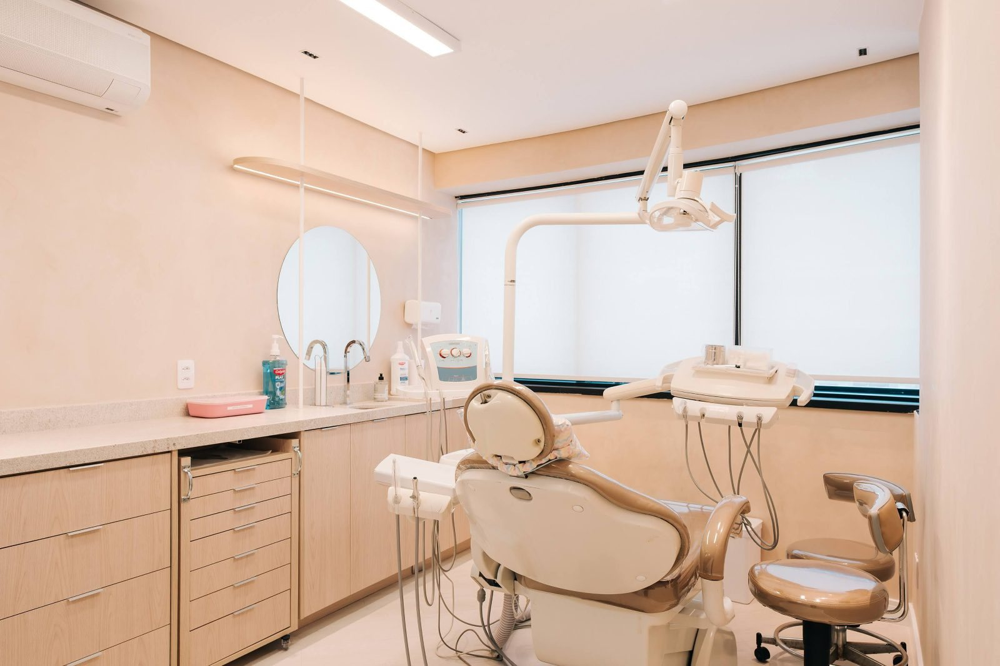
Cada fase tem seus próprios cuidados
Do primeiro dente à vida adulta, acompanhamos as diferentes fases da saúde bucal.
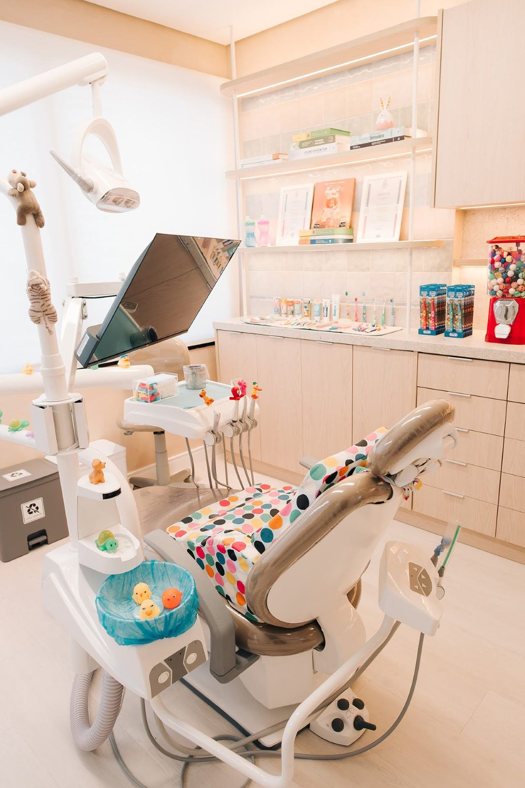
Odontopediatria é acompanhar cada etapa do desenvolvimento
O cuidado com a saúde bucal pode começar ainda nos primeiros meses de vida e seguir durante toda a infância e adolescência.
Acompanhamos a chegada dos dentes, o desenvolvimento das arcadas, a mordida, a higiene e os hábitos da criança. Esse acompanhamento permite perceber alterações precocemente e avaliar o melhor momento para cada orientação ou tratamento.
A adaptação ao dentista também faz parte desse processo. Cada etapa é explicada de forma adequada à idade, respeitando o tempo da criança e envolvendo a família sempre que necessário.
Também atendemos crianças com necessidades específicas, com planejamento prévio e adaptações individualizadas para tornar a consulta mais confortável e segura.
Agendar uma consultaPrincipais tratamentos
Cuidados importantes para acompanhar a saúde bucal e o desenvolvimento das crianças.
Pré-natal odontológico
O cuidado pode começar ainda durante a gestação.
Na consulta de pré-natal odontológico, orientamos sobre saúde bucal durante a gravidez e sobre os primeiros cuidados com o bebê, incluindo higiene, hábitos, uso de chupeta e mamadeira e a chegada dos primeiros dentes.
Prevenção, flúor e selantes
A prevenção faz parte de todas as fases da infância.
O acompanhamento pode incluir limpeza profissional, aplicação de flúor e uso de selantes quando indicados, além de orientações sobre escovação, alimentação e hábitos.
A frequência dos retornos é definida de acordo com a necessidade e o risco individual de cada criança.
Sedação com óxido nitroso
O óxido nitroso pode ser utilizado como recurso auxiliar em crianças com ansiedade ou em situações nas quais seja necessário tornar o atendimento mais confortável.
Administrado por meio de uma máscara, promove relaxamento sem perda de consciência. A criança permanece acordada e responsiva durante o procedimento.
O efeito costuma passar rapidamente após o término da administração, e a liberação é feita de acordo com a avaliação da profissional responsável.
Ortodontia e Ortopedia Funcional dos Maxilares
O acompanhamento ortodôntico pode começar ainda durante a infância, antes da troca completa dos dentes de leite.
Durante o crescimento, é possível acompanhar o desenvolvimento dos maxilares, a posição dos dentes e a mordida. Quando existe indicação, uma intervenção no momento adequado pode orientar o desenvolvimento e facilitar etapas futuras do tratamento.
Cada caso é avaliado individualmente para definir se é o momento de tratar ou apenas acompanhar.
Outros cuidados realizados na clínica
Na LUCCARE, reunimos em um só lugar os principais cuidados de odontopediatria, desde a prevenção até tratamentos clínicos e ortodônticos.
Prevenção e acompanhamento
- Pré-natal odontológico
- Profilaxia e orientações de prevenção
- Aplicação de flúor e selantes, quando indicados
- Manejo comportamental individualizado
Recursos e ortodontia
- Sedação com óxido nitroso
- Aplicação de laser
- Ortodontia preventiva e interceptiva
- Ortodontia corretiva
Cada fase da vida tem necessidades diferentes. Por isso, organizamos nossos tratamentos para facilitar a escolha do cuidado mais adequado para cada paciente.
Crianças
Acompanhamento desde os primeiros meses de vida, com atenção à prevenção, ao desenvolvimento e à adaptação ao atendimento odontológico.
- Odontopediatria e primeira consulta
- Prevenção, flúor e selantes
- Restaurações infantis
- Ortodontia preventiva e interceptiva
- Ortopedia Funcional dos Maxilares
Adolescentes e adultos
Tratamentos ortodônticos planejados de acordo com as necessidades, objetivos e características de cada paciente.
- Avaliação e planejamento ortodôntico
- Aparelhos ortodônticos convencionais
- Alinhadores Invisalign
- Acompanhamento do crescimento
- Contenção e manutenção dos resultados
Saúde bucal do adulto
Enquanto cuidamos das crianças, também podemos cuidar de quem as acompanha.
- Consultas preventivas e periódicas
- Clínica geral e restaurações
- Periodontia e saúde gengival
- Reabilitação oral e prótese
- Procedimentos estéticos
Alinhadores Invisalign em Pinheiros
Os alinhadores transparentes são uma das opções de tratamento ortodôntico disponíveis na LUCCARE para adolescentes e adultos.
O tratamento começa com uma avaliação clínica e um planejamento digital individualizado. A partir daí, apresentamos as possibilidades para o caso e discutimos com o paciente qual abordagem faz mais sentido.

A melhor opção depende do seu caso
Nem todo caso ortodôntico precisa da mesma abordagem.
Durante a consulta, avaliamos sua condição clínica, explicamos as opções disponíveis e apresentamos os critérios de cada indicação para que a decisão seja tomada com segurança e clareza.
O que orienta o nosso atendimento
Alguns princípios fazem parte de todas as consultas e ajudam a definir a forma como cuidamos de cada paciente.
Atendimento individualizado
Idade, desenvolvimento, histórico e ritmo de adaptação são considerados em cada atendimento. A condução da consulta é ajustada às necessidades de cada paciente.
Ciência e prevenção
Diagnóstico, planejamento e tratamentos são definidos com base em conhecimento científico e atualização profissional contínua.
Biossegurança
Esterilização, desinfecção e organização dos materiais seguem protocolos rigorosos em toda a clínica.
Tecnologia com propósito
Utilizamos recursos tecnológicos quando eles ajudam no diagnóstico, no planejamento ou no conforto durante o tratamento.
Acolhimento em cada consulta
Explicar o que será feito, preparar o paciente e respeitar seu tempo faz parte do atendimento, especialmente com crianças.
Pontualidade e respeito pelo seu tempo
Sabemos que a rotina das famílias é corrida. Organizamos nossa agenda para reduzir atrasos e reservar o tempo adequado para cada consulta.
Acompanhamento ao longo dos anos
Da primeira consulta do bebê à vida adulta, queremos que nossos pacientes encontrem na LUCCARE um lugar de confiança para cuidar da saúde bucal.
Nossa equipe
Profissionais com formação sólida, experiência clínica e atualização constante.
Na LUCCARE, diferentes áreas da odontologia trabalham de forma integrada para que cada paciente receba o cuidado adequado em cada fase da vida.
Da primeira infância à vida adulta, buscamos unir conhecimento técnico, prevenção e um atendimento próximo, respeitando as necessidades e particularidades de cada pessoa.
Dra. Mayara Macheldey
CRO-SP 124770Odontopediatra- Cirurgiã-Dentista pela USP
- Especialista em Odontopediatria pela USP
- Aperfeiçoamento em Ortodontia Preventiva e Interceptiva
- Atualização em atendimento a bebês pela USP
- Atualização em Aleitamento Materno e Neonatologia pela NEOM
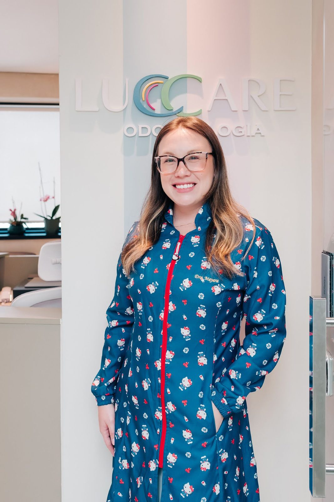
Dra. Karina Haibara
CRO-SP 120623Odontopediatra e Ortodontista- Cirurgiã-Dentista pela USP
- Doutora em Odontopediatria pela USP
- Especialista em Ortodontia e Ortopedia dos Maxilares pelo Instituto Prado
- Atualização em Aleitamento Materno e Neonatologia pela NEOM
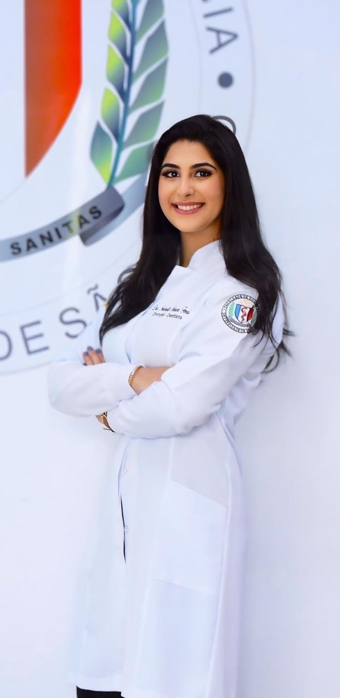
Dra. Isabella Ferri
CRO-SP 148360Periodontista- Cirurgiã-Dentista pela USP
- Especialista em Periodontia pela USP
- Mestranda em Periodontia pela USP
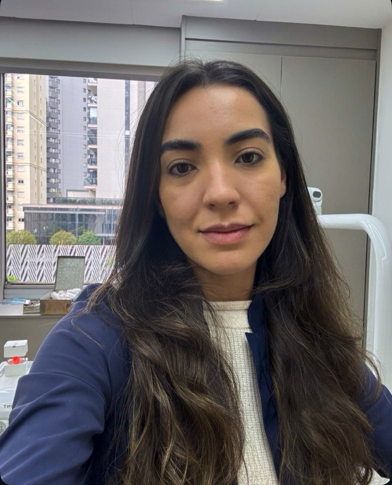
Dra. Maressa Rodrigues
CRO-SP 148389Odontologia Restauradora e Reabilitação Oral- Cirurgiã-Dentista pela USP
- Especialização em Prótese Dentária pelo Senac
- Atualização em Dentística Preventiva e Restauradora pela São Paulo Dental Studio
O que dizem nossos pacientes
Algumas experiências compartilhadas por pacientes e famílias que já passaram pela LUCCARE.
"Excelente clínica, a dra Karina que me atendeu é super competente, além da paciência com meu medo de dentista. Indico de olhos fechados."
"Fiquei muito satisfeita com o atendimento. A clínica é super organizada e todos os profissionais são muito atenciosos. Dá para perceber o cuidado e a confiança que passam aos pacientes. Recomendo!"
"Adorei minha experiência na Clínica Luccare! Desde a chegada, fui muito bem recebida e me senti super acolhida. Toda a equipe é muito atenciosa, cuidadosa e, principalmente, muito competente."
"Tive uma experiência incrível no consultório. O ambiente é super agradável, limpo e organizado. A dentista que me atendeu foi super profissional e eu adorei o serviço prestado."
"A dra Karina e a dra Mayara são super atenciosas e fui muito bem recebido!"
"Clínica sensacional! Atendimento impecável. Super recomendo."
@luccareodontologia
Informações sobre saúde bucal, prevenção, desenvolvimento infantil e um pouco da rotina da LUCCARE.
Seguir no InstagramPerguntas que recebemos com frequência
Algumas respostas para quem está conhecendo a LUCCARE ou se preparando para a primeira consulta.
Com que frequência devo ir ao dentista?
Não existe um intervalo igual para todas as pessoas.
Muitos pacientes fazem acompanhamento preventivo a cada seis meses, mas a frequência pode ser maior ou menor de acordo com idade, histórico, risco de cárie, condição da gengiva, uso de aparelhos e outras necessidades individuais.
As consultas periódicas ajudam a acompanhar a saúde bucal e identificar alterações antes que elas se tornem problemas mais complexos.
Na avaliação, orientamos o intervalo mais adequado para cada paciente.
Quando a criança deve ir ao dentista pela primeira vez?
A primeira consulta pode acontecer com o nascimento do primeiro dente ou até o primeiro ano de vida.
Começar cedo permite acompanhar o desenvolvimento da boca e dos dentes, além de orientar a família sobre higiene, alimentação, hábitos e prevenção desde o início.
Como é a primeira consulta da criança?
A primeira consulta começa com uma conversa com a família para conhecermos a criança, sua rotina e seu histórico.
Depois, realizamos a avaliação de acordo com a idade e o nível de adaptação da criança ao ambiente.
Explicamos cada etapa de forma simples e respeitamos seu tempo. O objetivo é cuidar da saúde bucal e, ao mesmo tempo, ajudar a construir uma relação tranquila com o dentista.
Meu filho tem medo de dentista. Como vocês conduzem o atendimento?
O medo do dentista é comum e pode ser trabalhado aos poucos.
Durante a consulta, apresentamos o ambiente, explicamos o que será feito em uma linguagem adequada à idade e avançamos de acordo com a resposta da criança.
O manejo comportamental faz parte da odontopediatria e é adaptado a cada paciente. O objetivo é tornar a experiência mais previsível, confortável e segura.
É preciso esperar a troca de todos os dentes de leite para começar um tratamento ortodôntico?
Não.
Em algumas situações, é interessante acompanhar a criança antes mesmo do nascimento de todos os dentes permanentes.
A avaliação precoce permite observar o desenvolvimento dos dentes, dos maxilares e da mordida. Quando existe indicação, uma intervenção durante o crescimento pode ser recomendada.
Em outros casos, o melhor é apenas acompanhar e aguardar.
Por isso, o momento de iniciar um tratamento ortodôntico é definido individualmente.
O que é Ortopedia Funcional dos Maxilares?
A Ortopedia Funcional dos Maxilares é uma área da odontologia voltada ao acompanhamento do crescimento e do desenvolvimento dos maxilares e da mordida.
Ela é especialmente importante durante a infância e a adolescência, quando essas estruturas ainda estão em desenvolvimento.
A avaliação permite identificar alterações no crescimento e entender se existe indicação para algum tipo de intervenção ou apenas acompanhamento.
O objetivo é favorecer o desenvolvimento e a função adequada do sistema mastigatório, sempre considerando as características de cada criança.
Vocês trabalham com alinhadores Invisalign?
Sim.
Os alinhadores Invisalign são uma das opções de tratamento ortodôntico disponíveis na LUCCARE para adolescentes e adultos.
A indicação depende da avaliação clínica e das características de cada caso. Durante a consulta, apresentamos as opções disponíveis e explicamos as diferenças entre elas.
A LUCCARE atende adultos?
Sim.
Além da odontopediatria, atendemos adolescentes e adultos em consultas preventivas, clínica geral, restaurações, periodontia, reabilitação oral, procedimentos estéticos e ortodontia, incluindo alinhadores Invisalign.
Como agendar uma consulta?
Você pode agendar diretamente pelo WhatsApp no número (11) 94552-2645.
Atendemos com hora marcada na Rua Francisco Leitão, 469, conjunto 1206, em Pinheiros, São Paulo.
Agende uma avaliação na LUCCARE
Fale com nossa equipe pelo WhatsApp para agendar sua consulta ou tirar dúvidas sobre o atendimento.
Onde estamos
A LUCCARE fica em Pinheiros, na zona oeste de São Paulo.
Pinheiros · São Paulo, SP · CEP 05414-025